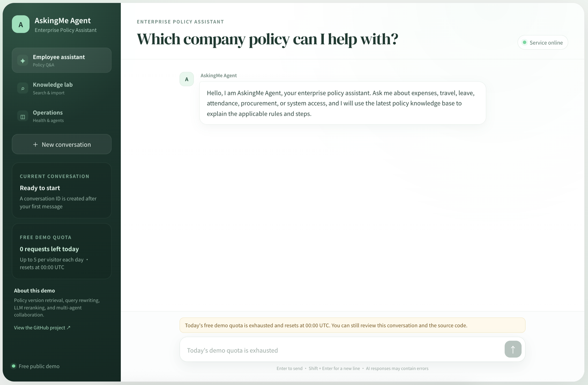

POLICY EVIDENCE → FINAL PRICE
Your policies.
Your question.
One clear price.
An AI agent that interprets promotion conditions,
retrieves evidence and executes precise arithmetic.
Ask in natural language.
Review policy evidence.
Follow the calculation.
The original full conversation demo is available at 52.13.228.228 ↗. It currently runs the earlier enterprise-policy version. The final-price update, including policy uploads, requires a backend deployment. Run the current version locally ↗

Elasticsearch retrieves policy evidence. When no usable context is found, the LLM reformulates the query with bounded retries. The model interprets conditions and produces a cited plan; the Decimal tool computes the amount. Uploaded policies follow a separate review and validity check, keeping all active evidence together.
POLICIES → EVIDENCE → CALCULATION
Know why a discount applies.